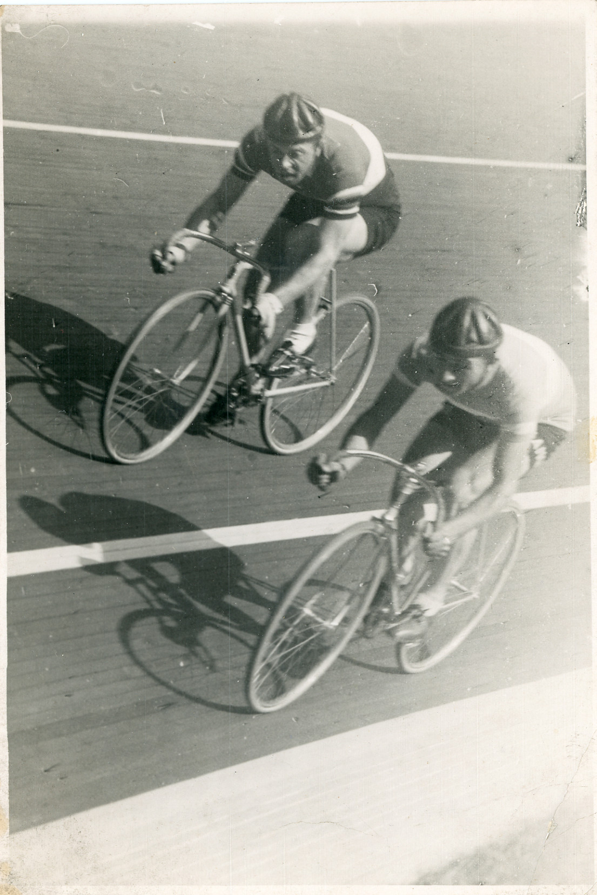

Velodromo Vigorelli

L’immagine è tratta dal Fondo fotografico dell’ex Assessorato allo Sport, al Turismo e ai Giardini, costituito da oltre 5000 immagini, principalmente fotografie in bianco e nero e a colori, in minima parte negativi. Il materiale è stato rinvenuto nel marzo 2023 in un sottotetto degli Uffici comunali di via Guglielmo Marconi, presso la Direzione Lavoro, Giovani e Sport, e da lì trasferito alcuni mesi dopo presso la Cittadella degli Archivi.
Le fotografie erano conservate in 4 scatole di grandi dimensioni e organizzate in album di plastica, buste e fascicoli; alcune decine risultavano sciolte senza alcuna condizionatura. Il Fondo si presentava in pessime condizioni a causa dei lunghi anni di abbandono e di incuria: soprattutto polvere; in più molte fotografie risultavano intaccate da una sostanza viscida, dovuta molto probabilmente alla decomposizione del PVC degli album. Nessuna presenza di muffe.
Si è così proceduto con l’eliminazione delle unità di conservazione originarie e alla pulitura delle fotografie, successivamente condizionate in buste in PVC, dotate di certificazione PAT (Photographic Activity Test) e poi in album di cartone antiacido. Per quanto riguarda l’ordinamento, la maggior parte degli album originari era numerata e suddivisa grosso modo per impianti sportivi e/o tematiche, con numerosi ed evidenti errori di attribuzione. La numerazione, inoltre, non aveva alcuna logica di tipo archivistico, perché il materiale sembrava ordinato secondo una sedimentazione temporale. Nessun inventario o elenco accompagnava la documentazione.
Si è deciso pertanto di dare un nuovo ordine alle fotografie che, dopo una condizionatura provvisoria in fase di ordinamento, sono state suddivise in 7 serie per un totale di 74 album: Impianti, Giardini, Monumenti, Altri Edifici, Eventi, Miscellanea (dove hanno trovato posto le immagini a cui non si è riusciti a dare una collocazione spazio-temporale), Multiple (865 fotografie doppie o multiple delle serie precedenti).
Il materiale fotografico copre principalmente un arco cronologico compreso tra gli anni Cinquanta e Sessanta del XX secolo, con antecedenti risalenti agli Venti/Trenta fino a spingersi agli anni Settanta/Ottanta. La documentazione proviene principalmente dalle agenzie fotogiornalistiche Publifoto e Farabola, ma anche da fotografi professionisti come Celso Battaia, Dario Gatti e, in minor misura, Vincenzo Aragozzini. Le fotografie sono state realizzate soprattutto durante gli assessorati di Gianfranco Crespi e Paride Accetti con lo scopo di documentare l’attività dell’assessorato di riferimento, dalla realizzazione di nuovi impianti sportivi alla ristrutturazione di quelli esistenti, all’organizzazione di eventi sportivi e culturali.
Il Fondo possiede una considerevole importanza storico-culturale, ponendosi come preziosa testimonianza di un periodo in cui la città cha subito numerose trasformazioni, soprattutto di carattere sociale e urbanistico, di cui queste fotografie offrono un punto di vista singolare, attraverso le finalità sportive e culturali.